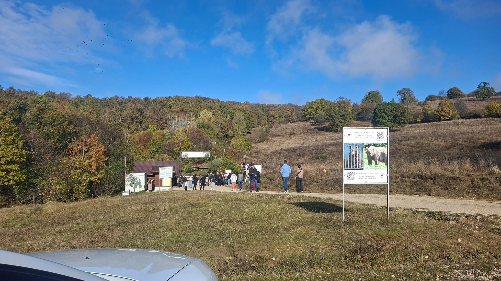

Rutas panorámicas en coche
Recorre las carreteras de montaña entre Bran y Moieciu, con paradas para disfrutar de los pueblos y hacer fotos.

Excursiones privadas conmigo, Corina. Te recojo en tu alojamiento en Brașov, exploramos los pueblos de montaña y te llevo de vuelta al final del día.
Planear mi aventura Ver rutasCrecí haciendo senderismo y acampando con mi familia. Hoy me encanta llevar a alguien por un camino de montaña que quizá nunca habría descubierto por su cuenta.
Un poco más sobre míRecorre las carreteras de montaña entre Bran y Moieciu, con paradas para disfrutar de los pueblos y hacer fotos.

Pasea entre portones de madera, prados de heno y las casas dispersas de Măgura y Peștera.

Podemos dedicar el día al castillo de Bran o hablar de Peleș, Râșnov y otros rincones tranquilos por el camino.

Reserva tiempo para comer en un pueblo y probar quesos de la zona y una porción de tarta casera.

Elige un paseo tranquilo por el bosque o una ruta de montaña más larga, según tu ritmo.

Aprovecha la última hora de luz en las colinas de Moieciu. Lleva la cámara y algo de abrigo.

Camina conmigo por el desfiladero de Zărnești. Elegimos la distancia según tu ritmo.
Recorremos pistas de montaña y paramos por encima de los pueblos para hacer fotos.

Puedo recogerte en tu alojamiento, llevarte en coche de una parada a otra y acompañarte de vuelta al final del día. Cuando el terreno lo permite, subimos con el Duster por pistas de 4×4 hasta un mirador, dejamos el coche para caminar o comemos sin prisas en un pueblo. Cuéntame qué te gusta y acordamos la ruta, los horarios y lo que incluye la excursión.
Día completoPor la mañana caminamos entre paredes de caliza y luego subimos en coche a Măgura para comer. Antes de volver, paseamos por la loma hacia Peștera hasta donde te apetezca.
Planear esta rutaMedio díaSubimos por caminos panorámicos, paramos para dar un paseo y hacer un pícnic, y vemos cómo cambia la luz en las montañas antes de regresar al alojamiento.
Planear esta ruta
Dos díasEl primer día combinamos una visita con reserva a Libearty con Moieciu y el castillo de Bran. El segundo recorremos el desfiladero de Zărnești y exploramos Peștera y Măgura. Acordamos de antemano los costes de entradas y comida.
Planear esta ruta¿Tienes un lugar guardado en el mapa? Envíamelo y vemos cómo incluirlo en la ruta.
Planear mi aventura«Pasamos dos días fantásticos explorando Rumanía con Corina de CoolCush Hub y la recomendamos de todo corazón».